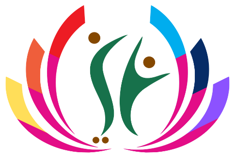

الحقيبة التدريبية المهنية الأرفع لإعداد قادة وممارسي الكوتشنج في العالم العربي — إعداد الماستر كوتش عبدالكريم الخليفي، بالتعاون مع شركة تمكين الرؤية للاستشارات المهنية والمقدمة للاعتماد لدى الاتحاد العربي للكوتشنج. رحلة تكاملية من 240 ساعة معتمدة، تغطي 8 محاور استراتيجية و 44 كفاية مهنية، و 90 تطبيقاً قياسياً، مع بوابة سلامة أخلاقية قطعية تضمن جودة الممارسة والاعتماد.
تتوزع كفايات برنامج إعداد وتأهيل الماستر كوتش 3.0 عبر 8 مجالات رئيسية تضم 43 كفاية فرعية تخصصية بالإضافة إلى كفاية الإشراف المهني على الممارسين، مع ربط كل كفاية بالشواهد العملية وروبركات التحكيم.
إتقان أسس وضوابط الممارسة المهنية وبناء علاقات التعاقد وإدارة الجلسات المعقدة بحضور قيادي وأخلاقي رفيع.
تشخيص دقيق للحالات والمنظمات، وفصل الوقائع عن التفسيرات، وتحديد الأسباب الجذرية بدلاً من الاكتفاء بالأعراض السطحية.
التوظيف الفعال للأدوات التشخيصية والاستكشافية المعتمدة (MBTI، عجلة الحياة، SWOT) وتكييفها بمرونة حسب احتياج المستفيد.
امتلاك الماستر كوتش لأدوات التفكير النقدي والمنظومي والتأملي، والقدرة على الإشراف على ممارسي الكوتشنج وقيادة المبادرات التطويرية.
التأسيس الأكاديمي الرصين للممارسة من خلال قراءة البحوث العالمية، وإعداد ورقة علمية تطبيقية محكمة تسهم في إثراء المعرفة الكوتشنجية.
توليد قيمة مضافة لميدان الكوتشنج من خلال تطوير 10 نماذج إدارية وتطويرية، وأداة قياس مبتكرة، وتصميم مشروع تخرج استثنائي.
استثمار التقنيات الحديثة والذكاء الاصطناعي بمسؤولية ووعي كامل، مع إعلاء الحكم المهني البشري والالتزام الصارم بسرية البيانات.
حصن المنظومة وحجر الزاوية: بوابة استقلالية صارمة لحماية كرامة المستفيدين، حدود الاختصاص، والالتزام بميثاق شرف الاتحاد العربي للكوتشنج.
لم يتم العثور على محاور أو كفايات مطابقة للبحث. يرجى تجربة كلمات بحث أخرى أو اختيار "كافة المحاور".
يخضع كل كوتش ملتحق بالبرنامج في المرحلة الأولى لتمكين تشخيصي تفاعلي يحدد الكفايات التي يمتلك لها شواهد، وتلك التي يرغب بتطويرها، والشاهد المستهدف بناؤه.
يمتد البرنامج على مدار 20 إلى 24 أسبوعاً من العمل المركز والمكثف عبر 7 مسارات رئيسية موزعة بتوازن دقيق يضمن التحول الكامل من ممارس كوتشنج إلى ماستر كوتش قائد.
محاضرات وورش عمل تدريبية متزامنة وحية تركز على الكفايات القيادية والتحليلية المتقدمة ونماذج اتخاذ القرار مع الماستر كوتش عبدالكريم الخليفي.
معامل تطبيقية متخصصة: مختبر الجاهزية، إدارة الجلسات، تحليل الحالات، المحاكاة، الإشراف، التوثيق، الذكاء الاصطناعي، الجودة، والتفكير التأملي.
ممارسة كوتشنج واقعية حية تمتد على مدار 3 أشهر متواصلة، موثقة بتقارير الجلسات وحالات التمكين وتطبيقات الأدوات التشخيصية المعتمدة.
جلسات إشراف فردي وجماعي مباشرة لتوجيه الكوتش المتدرب، تدقيق التسجيلات الصوتية، ومراجعة تقارير الحالات وخطط التطوير المستمر.
إعداد وتوثيق بحث تطبيقي رصين لا يقل عن 50 صفحة يعالج إشكالية مهنية في بيئة العمل، وفق المنهجية العلمية والتوثيق المعتمد APA 7th.
تصميم وبناء وتجربة نموذج كوتشنج تنفيذي مبتكر (تمكين 360) واختبار فاعليته الميدانية والدفاع عنه أمام لجنة التحكيم والاعتماد.
أرشفة وفهرسة الشواهد والأدلة والتأملات المهنية في حقيبة إلكترونية تفاعلية قابلة للتحقق الرقمي والطباعة بجودة عالية.
لا يكتفي برنامج الماستر كوتش بالمعرفة النظرية، بل يرتكز على تسليمات ميدانية كمية ونوعية دقيقة تبرهن على الكفاءة التشغيلية والريادة العملية.
دراسة 20 حالة ميدانية واقعية مع تشخيص كامل، وتحديد الأهداف، وخطط التدخل، وتقارير المتابعة والنتائج المحققة للمستفيد.
30 جلسة موزعة عبر الحالات العشرين مع تقرير إجرائي مفصل لكل جلسة يخضع لروبرك تقييم الجلسات الميدانية المعتمد.
30 تطبيق MBTI + 30 عجلة الحياة + 30 تحليل SWOT، مع قاعدة نظامية حاسمة تمنع تكرار المستفيد داخل الأداة الواحدة لضمان تنوع الممارسة.
صياغة وتوثيق 10 نماذج مبتكرة تتضمن الفكرة، القيمة المضافة، خطوات الاستخدام، حدود التطبيق، ونتائج الاختبار الميداني.
مقياس مؤشرات النضج القيادي والدافعية المهنية — أداة تشخيصية مبتكرة ذات موثوقية عالية مبنية وفق المعايير القياسية.
مشروع تطبيقي لقيادة التغيير وتهيئة منظومة عمل حقيقية في 4 مراحل استراتيجية لتطبيق ثقافة وممارسات الكوتشنج المؤسسي.
5 تسجيلات صوتية عالية الجودة تتناول محاور متخصصة في الكوتشنج مصحوبة باستمارة التغذية الراجعة والتأملات الذاتية.
ورقة بحثية تطبيقية وفق مواصفات الحقيبة (50 صفحة كحد أدنى) مع التوثيق المرجعي APA 7th ومناقشة علمية أمام اللجنة الأكاديمية.
يمنح كل خريج رقم تدريبي أكاديمي موحد (Candidate ID) يتيح التوثيق الفوري لصحة الاعتماد وسلامة ساعات التدريب المنجزة عبر رمز الاستجابة السريع.
تصدر الشهادة الرسمية متضمنة الرقم التدريبي الأكاديمي، ساعات البرنامج الـ 240، توصية اللجنة العلمية، والمرسوم المعتمد، مع إمكانية التحقق الرقمي المباشر عبر مسح الرمز الذكي (QR Code) من أي مكان بالعالم.
MC-2026-XXX يُولد فور التسجيل.
خبرة مهنية وميدانية ممتدة لأكثر من عقدين في قيادة برامج الكوتشنج التنفيذي والاستشارات المهنية وحوكمة الممارسات المؤسسية.
خبير ومستشار التطوير القيادي والمؤسسي، ماستر كوتش معتمد ومحكّم برامج دولية، مؤلف "حقيبة برنامج إعداد وتأهيل الماستر كوتش، الإصدار 3.0، النسخة التطويرية 2026". قاد مئات الجلسات التنفيذية والمشاريع الاستراتيجية لتهيئة المنظمات لثقافة الكوتشنج القيادي.
بيت الخبرة المهني والاستشاري الرائد في تقديم حلول الكوتشنج القيادي وبرامج التطوير التنفيذي وحوكمة الممارسات المؤسسية بالمملكة العربية السعودية والعالم العربي.
كل ما تود معرفته حول آلية التسجيل، توزيع الساعات، شروط التخرج، وقواعد التدقيق المعياري.
MC-2026-XXX يُولد تلقائياً فور تسجيلك في المنصة. يرافقك هذا الرقم في كافة مراحل التدريب، ويُستخدم في قيد الدفعات، إيداع المهام، وربط شهادة التخرج برمز الاستجابة السريع (QR Code) للتحقق المباشر من الاعتماد.
احصل على رقمك التدريبي الأكاديمي الرسمي، وانضم إلى ديوان الحوار التفاعلي وجلسات الإشراف الحي تحت قيادة الماستر كوتش عبدالكريم الخليفي.